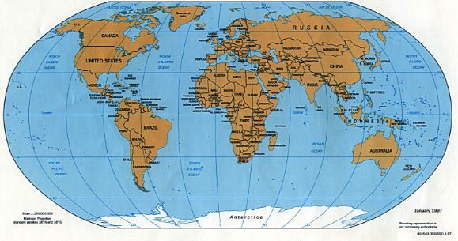
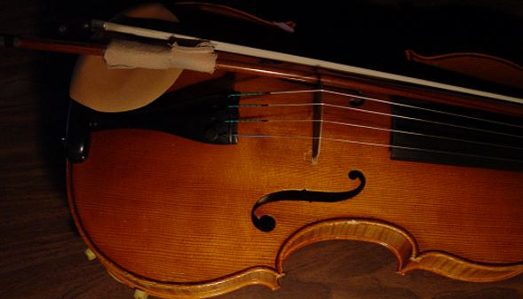

| Project Type Click on blue text for link to Project |
Description | Systems/Applications |
|---|---|---|
| Report on Analysing and Evaluating Data 2016 in Adobe pdf document | This project was a new experience which I learnt and used from my work placement experience. I had access to data and was able to create my own analysis and bring to the attention of the Manager. | Pivot table Excel, Microsoft CRM 2011 - as well as Tableau, NodeXL, Power BI, Raw - (these are recent ones that I practiced for my next project for 2017) |
| Website Products 2015 | Website link showing a list of products with features for searching items, selecting number of items and units, adding new item to list, data input, deleting and adding costs | JetBrains WebStorm 10 - angular js and bootstrap Files saved as .js .css and .html |
| Report for Website on Wards of Court 2013 in Word document and the link to Website |
This was the first website topic I created from 2011 and I used it again with improvements in 2013. The topic was an issue that needed public information website as alot of unknowns behind this. This link will show user the report and storyboard for the website. Website is not yet attached. | Notepad++ .html .css |
| HOBBIES AND INTEREST |
|---|
|
CRIMINAL JUSTICE: I have a major interest in most parts of the criminology aspect and in particular Justice. I was a Welfare Representative where a family with deafness required my legal representation in which I put a case together and presented this in the Tribunal. It was a first and only case that we won. I then decided to study law and did two years of the LLB degree in Law when I lost interest. I would type letters on behalf of someone, being neutral and unbiased.. This had brought me into the human rights issues and specifically for the elderly people and children. I love investigating. I enjoy the CSIs drama as well as the real life caseworks. It may have stemmed from the fact I always wanted to be a detective just like my grandfather. |
| 
TRAVEL: My background is mixed. I have an Irish/Fijian/Chinese/English in my blood which is probably why I love travelling. I really could not pinpoint where my home is. I have been to places such as Fiji, New Zealand, Japan, Italy, Florida, and other smaller European places. I still hope to do a travel blog someday, but that is a long awaited task. I have a few bits and pieces that needs to be timelined and verified where they actually came from. In all my previous work and especially in the NHS I travelled across London to other offices. I am pretty good with arriving on time. This may come from making sure I arrive at the airport 3 hours beforehand. I also like to pick up a few basic languages just to get by. Regarding languages, I can also add some British Sign Language to the list. One day I plan to go to Bora Bora. |
| 
MUSIC AND OUTDOORS: I used to play a violin hence the image and did an entry exam at The Royal College of Music by Kensington Park, London. I also used to play a number of others: tin-whistle, etcetera. I like to enjoy a wide range of music including classical to urban type of music. Dancing has always been a passion of mine. As a child I attended drama and dancing outside school and performed on stages. Now I go out socially often and join up a number of Meetup groups as a member meeting new people. I am planning to learn to play the guitar properly. From an outdoors hobby or interest, I flew a plane last year and loved it. I went on a hot air balloon this year and to date, I am looking into car rally. Friends say I am mad but I say I am enjoying life. I have been known to be a risk taker as well as being adventurous. |